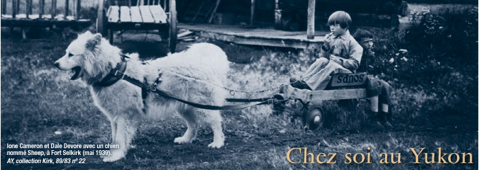

Histoire du Corbeau : Les Contes
Cliquez ici pour passer directement au premier tableau, Histoire du Corbeau : Les Contes.
Parcourir les tableaux
Vous pouvez sélectionner un ou l'autre des tableaux dans le menu déroulant ci-dessous ou choisir un tableau à partir de la carte du site, en cliquant sur le bouton situé à gauche au bas de la page.